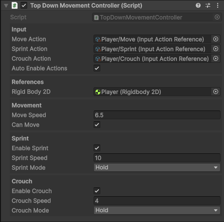

Character Movement Controller Components
Character Controllers are components which let the player control the movement of a GameObject.
When used with a Character Animator Hander you can both control and animate any character with ease.
Top Down Character Movement Controller
Handles character movement along the X and Y axis for 2d top-down games.
- Uses the New Input System
- Optional Sprint and Crouch support
- Handles movement through a Rigidbody2D component.
